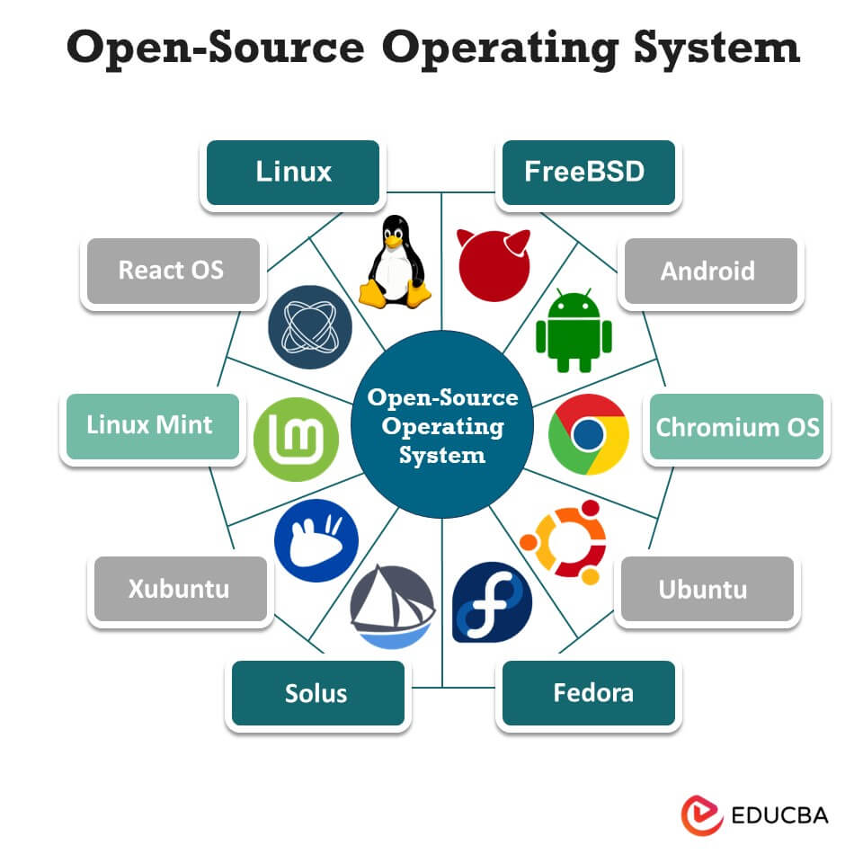

An Operating System (OS) is system software that manages computer hardware and software resources and provides common services for computer programs.

Various open-source operating systems used across devices
Popular Open-Source Operating Systems:
Linux: A family of open-source Unix-like systems widely used in servers and embedded devices.
Ubuntu: A user-friendly Linux distribution often used by beginners.
Fedora: A cutting-edge Linux distro sponsored by Red Hat.
Android: An OS based on the Linux kernel, used in billions of mobile devices.
FreeBSD: A secure and high-performance Unix-like OS used in servers and networking.
Operating systems are the foundation for all software execution. Open-source options provide flexibility, customization, and cost-efficiency for users and developers alike.